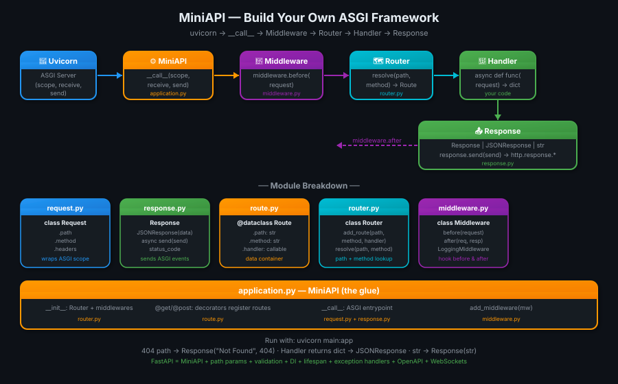

06 · MiniAPI — Build Your Own Framework 🔧#
🎯 One Line#
Build a tiny ASGI framework from scratch — routing, requests, responses, middleware, JSON — until you realize you just built a baby FastAPI. Then FastAPI feels like magic you understand.
🖼️ The Picture#

💡 Analogy: FastAPI seekhna seedha end product dekhne jaisa hai — impressive, magical. MiniAPI banana seedha assembly line dekhne jaisa hai — boring nahi, interesting! Jab tum khud screw lagate ho toh pata chalta hai screw kahan fit hota hai. 🔩
🧱 What We're Building — The Journey#
flowchart LR
S1["Step 1\nBare-bones\nASGI app"]
S2["Step 2\nPath-based\nrouting"]
S3["Step 3\nDecorator\nAPI (@app.get)"]
S4["Step 4\nModular\narchitecture"]
S5["Step 5\nRequest +\nResponse objects"]
S6["Step 6\nMiddleware\nsupport"]
S7["✨ MiniAPI\n= baby FastAPI"]
S1 --> S2 --> S3 --> S4 --> S5 --> S6 --> S7Each step adds exactly one concept. By the end — you'll understand every layer of FastAPI.
Step 1 — Bare-Bones ASGI App#
The absolute minimum. One function, one response.
# main.py
async def app(scope, receive, send):
if scope["type"] != "http":
return
await send({
"type": "http.response.start",
"status": 200,
"headers": [(b"content-type", b"text/plain")]
})
await send({
"type": "http.response.body",
"body": b"Hello ASGI"
})
What this teaches: The entire ASGI contract. Every framework — FastAPI, Starlette, Django — is this function, made smarter.
Step 2 — Path-Based Routing#
Read scope["path"] and return different responses.
async def app(scope, receive, send):
path = scope["path"]
if path == "/":
body = b"Home Page"
elif path == "/users":
body = b"Users Page"
else:
body = b"404 Not Found"
await send({
"type": "http.response.start",
"status": 200,
"headers": [(b"content-type", b"text/plain")]
})
await send({
"type": "http.response.body",
"body": body
})
What this teaches: Routing is just an if/elif on scope["path"]. FastAPI's @app.get("/users") eventually does the same thing — just with a dict lookup instead.
Step 3 — Decorator API (The FastAPI Feel)#
Add @app.get("/path") decorator support. Now it looks like FastAPI.
# single-file miniapi
class MiniAPI:
def __init__(self):
self.routes = {} # (method, path) → handler
def get(self, path):
def decorator(func):
self.routes[("GET", path)] = func
return func
return decorator
async def __call__(self, scope, receive, send):
method = scope["method"]
path = scope["path"]
handler = self.routes.get((method, path))
if handler:
result = await handler()
body = result.encode()
status = 200
else:
body = b"Not Found"
status = 404
await send({
"type": "http.response.start",
"status": status,
"headers": [(b"content-type", b"text/plain")]
})
await send({
"type": "http.response.body",
"body": body
})
# Usage:
app = MiniAPI()
@app.get("/")
async def home():
return "Hello Home"
@app.get("/users")
async def users():
return "Users List"
What this teaches: Decorators are just functions that register handlers into a dict. self.routes[("GET", path)] = func is the core of every web framework's routing system.
Step 4 — Modular Architecture#
Split into files. This is how Starlette and FastAPI are actually organized.
miniapi/
├── __init__.py
├── application.py ← MiniAPI class (ASGI __call__)
├── router.py ← Route registry + lookup
├── route.py ← Route dataclass
├── request.py ← Wraps scope into friendly object
├── response.py ← Response + JSONResponse
├── middleware.py ← Base middleware class
└── exceptions.py ← HTTPException
route.py — One Route#
from dataclasses import dataclass
from typing import Callable
@dataclass
class Route:
path: str
method: str
handler: Callable
A Route is just a value object — 3 fields. Nothing more.
router.py — Route Registry#
from .route import Route
class Router:
def __init__(self):
self.routes = []
def add_route(self, path, method, handler):
self.routes.append(
Route(path=path, method=method, handler=handler)
)
def resolve(self, path, method):
for route in self.routes:
if route.path == path and route.method == method:
return route
return None
What this teaches: A router is a list of routes + a resolve() method. FastAPI's router is the same idea, extended with path parameter patterns and regex matching.
request.py — Wrap scope#
class Request:
def __init__(self, scope):
self._scope = scope
@property
def path(self):
return self._scope["path"]
@property
def method(self):
return self._scope["method"]
@property
def headers(self):
return dict(self._scope.get("headers", []))
What this teaches: Request is just a friendly wrapper around scope. scope["path"] → request.path. FastAPI's Request object does the exact same thing — plus body parsing, query params, etc.
response.py — Text + JSON#
import json
class Response:
def __init__(self, body="", status_code=200, content_type="text/plain"):
self.body = body
self.status_code = status_code
self.content_type = content_type
async def send(self, send):
body = self.body.encode() if isinstance(self.body, str) else self.body
await send({
"type": "http.response.start",
"status": self.status_code,
"headers": [(b"content-type", self.content_type.encode())]
})
await send({
"type": "http.response.body",
"body": body
})
class JSONResponse(Response):
def __init__(self, data, status_code=200):
super().__init__(
body=json.dumps(data),
status_code=status_code,
content_type="application/json"
)
What this teaches: FastAPI's JSONResponse is EXACTLY this — json.dumps() the data, set content-type to application/json, call send() twice. The "magic" is 8 lines of code.
middleware.py — Base Class#
class Middleware:
async def before(self, request):
pass # Override in subclasses
async def after(self, request, response):
pass # Override in subclasses
class LoggingMiddleware(Middleware):
async def before(self, request):
print(f"→ {request.method} {request.path}")
async def after(self, request, response):
print(f"← {response.status_code}")
application.py — The ASGI App (Glue Layer)#
from .router import Router
from .request import Request
from .response import Response, JSONResponse
class MiniAPI:
def __init__(self):
self.router = Router()
self.middlewares = []
# ── Decorator API ─────────────────────────────
def get(self, path):
def wrapper(handler):
self.router.add_route(path, "GET", handler)
return handler
return wrapper
def post(self, path):
def wrapper(handler):
self.router.add_route(path, "POST", handler)
return handler
return wrapper
def add_middleware(self, middleware):
self.middlewares.append(middleware)
# ── ASGI entry point ──────────────────────────
async def __call__(self, scope, receive, send):
if scope["type"] != "http":
return
request = Request(scope)
# Run before-middleware
for mw in self.middlewares:
await mw.before(request)
# Route lookup
route = self.router.resolve(request.path, request.method)
if route is None:
response = Response("Not Found", status_code=404)
else:
result = await route.handler(request)
# Auto-detect return type → correct Response
if isinstance(result, Response):
response = result
elif isinstance(result, dict):
response = JSONResponse(result)
else:
response = Response(str(result))
# Run after-middleware
for mw in self.middlewares:
await mw.after(request, response)
await response.send(send)
Step 5 — Usage: Full MiniAPI App#
# main.py
from miniapi.application import MiniAPI
from miniapi.middleware import LoggingMiddleware
from miniapi.response import JSONResponse
app = MiniAPI()
app.add_middleware(LoggingMiddleware())
@app.get("/")
async def home(request):
return {"message": "Hello from MiniAPI!"}
@app.get("/users")
async def list_users(request):
return {
"users": ["Ayush", "Priya", "Rahul"]
}
@app.get("/health")
async def health(request):
return JSONResponse({"status": "ok"}, status_code=200)
uvicorn main:app --reload
# GET / → {"message": "Hello from MiniAPI!"}
# GET /users → {"users": ["Ayush", "Priya", "Rahul"]}
# GET /health → {"status": "ok"}
# GET /other → "Not Found" (404)
# Console logs → GET /users ← 200
🗺️ MiniAPI → FastAPI: What's Missing#
You built the core. FastAPI adds 10 more layers on top:
graph TB
MA["🔧 MiniAPI\n(what we built)"]
MA --> PP["Path params\n/users/{id}"]
MA --> QP["Query params\n?page=1&limit=10"]
MA --> RB["Request body\nPydantic validation"]
MA --> DI["Dependency Injection\nDepends()"]
MA --> OA["OpenAPI / Swagger\nauto-generated /docs"]
MA --> MW["ASGI Middleware\nchaining (not before/after)"]
MA --> BG["Background Tasks"]
MA --> WS["WebSocket support"]
MA --> EH["Exception Handlers\n@app.exception_handler"]
MA --> LS["Lifespan events\nstartup/shutdown"]
style MA fill:#ff9800,color:#fff
PP --> FA["⚡ FastAPI"]
QP --> FA
RB --> FA
DI --> FA
OA --> FA
MW --> FA
BG --> FA
WS --> FA
EH --> FA
LS --> FA
style FA fill:#4caf50,color:#fff| Feature | MiniAPI | FastAPI |
|---|---|---|
| Basic routing | ✅ | ✅ |
| JSON responses | ✅ | ✅ |
| Middleware hooks | ✅ (before/after) | ✅ (ASGI chain) |
| Path parameters | ❌ | ✅ /users/{id} |
| Query parameters | ❌ | ✅ auto-parsed |
| Request body | ❌ | ✅ Pydantic |
| Dependency injection | ❌ | ✅ Depends() |
Auto docs /docs |
❌ | ✅ |
| WebSockets | ❌ | ✅ |
| Exception handlers | ❌ | ✅ |
The point: FastAPI is not magic. It's a MiniAPI with 10 more features, all built on the same (scope, receive, send) contract.
🔗 How FastAPI Is Actually Layered#
Your Code
↓ @app.get("/users")
FastAPI
↓ type hints → Pydantic validation
↓ path params → regex matching
↓ Depends() → dependency graph
Starlette
↓ Routing, middleware chain, WebSocket helpers
↓ Request/Response objects
ASGI interface
↓ async def __call__(scope, receive, send)
Uvicorn
↓ TCP → HTTP parsing → calls app
Network
Starlette is the framework layer — routing, middleware, WebSockets. FastAPI sits on top of Starlette and adds the Pydantic validation, dependency injection, and OpenAPI generation. Your MiniAPI is a simplified Starlette.
💡 "Aha!" Moments#
__call__ makes any object an ASGI app
Adding
async def __call__(self, scope, receive, send)to ANY Python class makes it an ASGI application. Uvicorn just needs a callable with that signature — class instance, plain function, doesn't matter. FastAPI uses a class so it can store state (routes, middleware, etc.) between calls.
Decorator = dict insert
@app.get("/users")is syntactic sugar forapp.routes[("GET", "/users")] = my_function. The@symbol is just Python callingapp.get("/users")(my_function). Understanding this makes decorators demystify completely.
⚠️ Gotchas#
- ❌ Our
Router.resolve()uses exact string match — real frameworks use regex for/users/{id}path params - ❌ Our
Middlewareruns as simple before/after hooks — Starlette uses ASGI middleware chaining (each middleware wraps the app, more powerful) - ❌ We never call
receive()— our app ignores request bodies. Real apps needawait receive()to read POST body - ❌ Our error handling is a 404 string — production apps need typed
HTTPExceptionwith status codes + JSON error bodies - ❌ No
content-lengthheader — real responses should include it for browser compatibility
🧪 Quick Check#
❓ What does async def __call__(self, scope, receive, send) on a class do?
It makes the class instance **callable as an ASGI application**. When Uvicorn does `await app(scope, receive, send)`, Python calls `app.__call__(scope, receive, send)`. Any class with this method can be passed to Uvicorn as an ASGI app — that's exactly how `FastAPI()`, `Starlette()`, and our `MiniAPI()` all work.
❓ What does @app.get("/users") actually do at Python level?
It's a two-step call:
1. `app.get("/users")` is called — returns a `decorator` function
2. `decorator(my_handler)` is called — registers `("GET", "/users") → my_handler` in the routes dict and returns the original function unchanged
So `@app.get("/users")` before `async def users()` is identical to:
❓ What's missing in MiniAPI vs FastAPI? Name 5 things.
1. **Path parameters** — `/users/{id}` regex matching 2. **Query parameters** — auto-parse `?page=1` from `scope["query_string"]` 3. **Request body parsing** — `await receive()` + Pydantic validation 4. **Dependency injection** — `Depends()` graph resolution 5. **OpenAPI docs** — auto-generated `/docs` Swagger UI from type hints❓ Why does our MiniAPI never call receive()?
Because our app only handles GET requests with no body. `receive()` is needed when you want to read the request body — for POST/PUT requests with JSON payload. A real app would do:
FastAPI calls `receive()` internally when a route has a body parameter (Pydantic model). We skipped this to keep it simple.
Next → Path Parameters